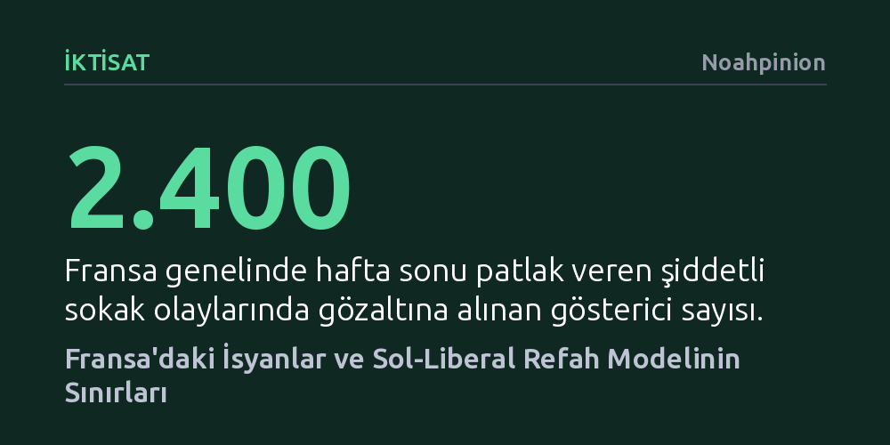

IKTISAT · Noahpinion · 2026-10-23
Fransa'daki şiddetli sokak isyanları ve tırmanan borçlanma faizleri; cömert refah devleti, Keynesyen bütçe açıkları ve kitlesel göç politikalarının sürdürülemez bir sınıra dayandığını gösteriyor. Toplumun harcama kesintilerine sert direnci, devleti borç krizine ve mali felce sürüklüyor.
Sosyal yardımların ve erken emekliliğin geri alınamaz kazanımlara dönüştüğü bir sistemde, Keynesyen maliye politikalarının ve refah devletinin iflasa sürüklenmeden ayakta kalamayacağını gösteriyor.

Fransa'da hafta sonu patlak veren ve yüz milyonlarca dolarlık tahribata yol açan kitlesel yağma ve çatışmalar, ülkedeki kronikleşen toplumsal huzursuzluğu yeniden alevlendirdi. Paris, Marsilya ve Bordeaux gibi büyük şehirlerde kamu binaları ateşe verilirken binlerce kişi gözaltına alındı. Fransa için sokak eylemleri alışıldık bir manzara olsa da bu seferki dalga, okullardaki fiziki yetersizlikler ve genç işsizliği gibi derin yapısal sorunlarla besleniyor.
Olayların asıl tehlikeli boyutu ise finansal cephede hissediliyor. Yatırımcılar, Fransa'nın artık harcamaları kısamayacağına veya vergileri artıramayacağına, artan faiz yükünü karşılamak için sürekli daha fazla borçlanacağına inanmaya başladı. Hükümetin bütçeyi geçirememesi ve sokaktaki yangın, Fransız devlet tahvillerinin faizlerini yukarı fırlattı ve piyasalarda temerrüt kaygılarını tetikledi.
Sokaktaki eylemcilerin talepleriyle piyasanın gerçekleri tam bir tezat oluşturuyor. Göstericiler eğitime milyarlarca avroluk ek bütçe, emekli maaşlarına zam ve sübvansiyon isterken, bu talepler tahvil faizlerini daha da artırıyor. Yükselen borçlanma maliyeti ise hükümetin sosyal harcama yapma alanını tamamen daraltarak göstericilerin istediklerinin tam tersi bir mali kıskaç yaratıyor.
Fransa'yı benzer mali sorunlar yaşayan diğer Batılı ülkelerden ayıran en belirgin unsur, emeklilik konusunda gerçekçi bir zemine oturamamasıdır. Resmi emeklilik yaşının 62 olduğu ülkede fiili emeklilik yaşı Batı Avrupa'nın en düşüğü konumunda. Macron hükümetinin emeklilik yaşını kademeli olarak 64'e çıkarma girişimi bile, diğer gelişmiş ülkelere kıyasla hayli mütevazı olmasına rağmen, aşırı sağ ve aşırı solun ortak muhalefetiyle dondurulmuş durumda.
Sol siyasetin bu açıkları kapatmak için öne sürdüğü zenginleri vergilendirme formülü ise geçmişte Fransa'da defalarca denendi ve hüsranla sonuçlandı. 2012 yılında François Hollande döneminde 1 milyon avronun üzerindeki gelirlere getirilen yüzde 75'lik süper vergi, kasaya kayda değer bir gelir getirmek bir yana, sermaye ve varlık sahiplerinin ülkeden kaçışına yol açtı. Zenginlerin Belçika, İsviçre veya Lüksemburg gibi komşu Frankofon ülkelere taşınması son derece kolay olduğu için bu tür vergiler beklenenin çok altında gelir üretti ve iki yıl sonra sessizce yürürlükten kaldırıldı.
Servet vergisinin verimsizliği ve orta sınıfın zaten yüksek olan vergi yükü, kamu harcamalarını finanse etmeyi imkânsızlaştırıyor. KDV artışı gibi orta sınıfı hedefleyecek bir vergi adımı ise doğrudan sokakları ateşe veren kesimleri vuracağı için siyaseten uygulanamaz görülüyor. Böylece devlet, harcamalarını karşılayacak yeni gelir bulamazken mevcut kazanımları budamaktan da aciz kalıyor.
Fransa'da yaşananlar, yarım yüzyıldır Avrupa'nın temel yönetim modeli olan ve Amerikan ilericilerinin de örnek aldığı sol-liberal refah devletinin sınırlarını gözler önüne seriyor. Sosyal haklar adeta tek yönlü işleyen bir cırcır mandalına dönüşmüş durumda: Her kazanım bir sonrakinin beklentisini doğuruyor ve en küçük tasarruf adımı dahi şehirlerin yakılmasıyla sonuçlanıyor. Toplum, sürdürülebilir bir refah sistemi ile sürdürülemez olanı arasındaki farkı ayırt etme yetisini kaybetmiş görünüyor.
Bu durum, kriz anlarında kamu harcamalarıyla talebi canlandırmayı savunan Keynesyen iktisadın uygulanabilirliğini de zora sokuyor. İktisatçıların üzerinde uzlaştığı Keynesyen reçete, kriz dönemlerinde bütçe açığı vererek harcama yapılmasını, fakat ekonomi toparlandığında bütçe fazlası verilerek borçların azaltılmasını öngörür. Ancak pratikte bolluk dönemlerinde kemer sıkacak siyasi iradeyi göstermek imkânsıza yakındır; hatta siyasi sermayesini harcamayı göze alan liderler bile eninde sonunda geri adım atmak zorunda kalıyor.
Nitekim James Buchanan'ın kamu tercihi teorisinde çok önceden işaret ettiği gibi, kamu harcamalarının boyutunu artık teknokratların akılcı kararları değil, hükümet binalarını ateşe veren öfkeli kitlelerin baskısı belirliyor. Almanya kriz sonrasında tasarrufa yönelmeyi başarırken, Fransa borçlanıp harcamaya devam etti. Likidite tuzağından çıkıldığında ve faizler yükseldiğinde ise bu ertelenen fatura devasa bir enflasyon ve mali çöküş tehdidi olarak geri dönüyor.
Sokaklardaki öfke sadece mali politikaları değil, sol-liberalizmin bir diğer sacayağı olan hoşgörülü kitlesel göç yaklaşımını da sınıyor. Fransa'daki yağma görüntülerinde göçmen kökenlilerin yanı sıra belirgin bir beyaz nüfus da yer alsa da, toplumun bu krizlere verdiği siyasi tepki belirleyici oluyor. Cömert sosyal harcama vaat eden sol partiler oy oranlarını artıramazken, kitleler Fransa'da ve tüm Avrupa'da göçü durdurmayı vadeden sağ hareketlere yöneliyor.
Amerika Birleşik Devletleri yüksek asimilasyon kabiliyeti ve farklı göçmen yapısıyla bu baskıyı daha farklı yönetebilse de, Fransa örneği sol-liberal reçetelerin her ülkede aynı başarıyla çalışamayacağını kanıtlıyor. Fransa'da sokakların alev alması basit bir asayiş sorunu değil; cömert refah devleti, Keynesyen talep yönetimi ve kitlesel göç üçlüsüne dayanan modelin taşıma kapasitesinin sonuna geldiğinin açık bir işaretidir.